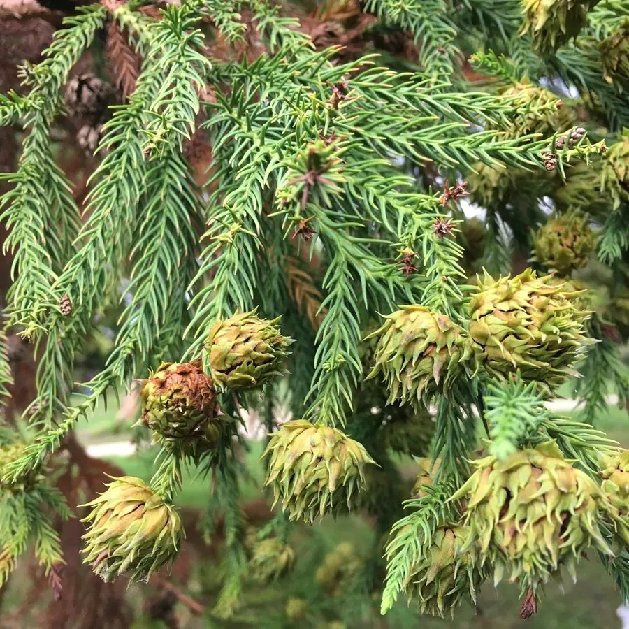

蕨类与裸子植物 · 植物界
柳杉 Cryptomeria japonica

柳杉树形高大挺拔，叶呈钻形、螺旋排列如柳条，常成片栽于寺庙与山道旁，是东亚常见的常绿景观树。
- 分类
- 门裸子植物门纲松纲目松柏目科柏科属柳杉属
- 栖息环境
- 海拔 1000 m 以下的温暖湿润山地，喜光、喜酸性肥沃土壤
- 地理分布
- 中国长江以南及日本，寺庙园林中常见古树
- 保护级别
- 暂无评估；栽培广泛，古树受保护
物种志
柳杉是柏科常绿乔木，高可达 40 m，胸径可达 2 m，树干通直，树皮红褐色、长条片状剥落。叶片钻形，螺旋状排列，略向内弯曲，长 1–2 cm，深绿色。雌雄同株，雄球花腋生，雌球花顶生。球果近球形，直径约 1.5–2.5 cm，种鳞盾形，种子具窄翅。树冠圆锥形，枝叶浓密，树形雄伟。
柳杉原产中国与日本，喜温暖湿润、光照充足的环境，耐寒性较强，适宜在深厚肥沃、排水良好的酸性土壤中生长，常成片种植于寺庙周围、山道两旁与陵园之中。它生长较快、寿命长，木材轻软、纹理直，可供建筑、器具、造船与造纸，树皮可作屋顶覆盖材料。柳杉栽培历史悠久，浙江、福建、江西、四川等地的古寺名山多有古柳杉，是东亚重要的景观与用材树种。
形态与习性
- 树高可达 40 m，胸径可达 2 m
- 叶钻形，螺旋状排列
- 球果近球形，直径约 1.5–2.5 cm
- 木材轻软、纹理直
- 用途建筑、器具与景观树
- 习性喜温暖湿润与酸性土壤
趣味知识
- 柳杉的叶子是钻形的，螺旋状长在枝上，远看像柳条。
- 许多古寺名山都有树龄数百年的柳杉古树。
- 柳杉木材轻软耐腐，树皮还能用来铺盖屋顶。